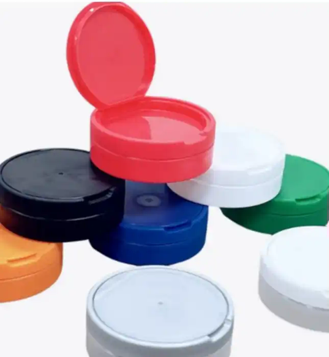
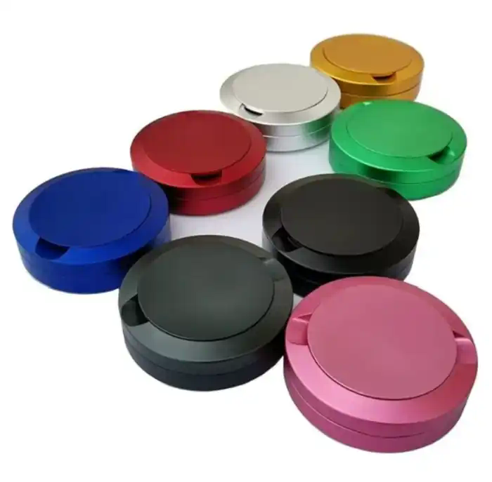

Color programs
High-visibility brand colors
Bold resin colors for product differentiation, line extensions, limited editions and flavor or category coding.
Color matchingMixed programsPrivate label
From a sample, sketch or idea to tooling, production, private labeling, export packing and delivery coordination—Tin Tech gives growing brands one practical manufacturing partner.


Use an existing round format as the starting point, change the color and finish, add branding, refine the internal layout, or develop a dedicated mold.
The real value is the ability to adapt the product around your use case, brand position, target volume and fulfillment plan.
The images below show how the same core idea can be presented for practical, colorful or premium product lines.
Bold resin colors for product differentiation, line extensions, limited editions and flavor or category coding.
Explore matte, gloss, metallic-look and specialty presentation routes subject to material and process validation.
Simple body-and-lid combinations designed for repeat production, efficient packing and straightforward inventory planning.
We turn reference samples and commercial ideas into a defined product: geometry, resin, closure behavior, finish, packaging, quality checks and ownership terms.
A proven format can shorten development, but every project still needs a written specification. Dimensions, wall thickness, hinge behavior, lid fit, compartment layout, resin grade and decoration should be approved before production.
Bring a photo, sample, sketch or target function. We can evaluate the right manufacturing, sourcing and packaging route rather than forcing every request into one process.
The board is a capability reference—not a claim that every pictured item is already in production. Each request is assessed for tooling, material, volume, compliance needs and the best make-or-source route.
Tin Tech has served Outlaw Dip Inc. and supported other export-market product requirements.
The value is not only the molded part. It is the accumulated understanding of remote development, repeat production, practical communication, export packing and keeping a product program moving.
Food-contact, child-resistant, regulatory or certification claims are made only where the relevant project materials, testing and records support them.
The manufacturing team develops and produces in Sri Lanka while George provides a familiar commercial point of contact and warehouse support from New York.
Development, sourcing, mold making, production, quality checkpoints, assembly and export packing.
Communication, relationship management, warehouse facilitation and onward delivery planning.
For the right long-term program, Tin Tech can discuss a dedicated production line, operating partnership or structured facility pathway.
Send a photo, sketch, existing item, CAD file or plain-English description. We will review the likely material, tooling route, production considerations and information needed for a commercial proposal.
Contact George
hockeyundergroundusa@gmail.com
For a faster review, include target quantity, launch timing, dimensions and delivery destination.
No. A physical sample, photographs, measurements or a clear explanation can begin the review. Formal technical information will be developed before tooling approval.
Yes. An existing platform may reduce development time. Color, finish, decoration, packing and some functional details can then be reviewed around your program.
Mold ownership, storage, maintenance and exclusivity should be written into each proposal before payment. Dedicated client-owned tooling can be structured where appropriate.
Yes. Tin Tech can evaluate containers, closures, consumer products, components and packaging systems. Some items may be manufactured directly, while others may use a verified sourcing and assembly route.
Export freight, warehousing and onward delivery can be included depending on shipment size, destination, Incoterms and fulfillment requirements.
No. Requirements depend on the product, material, intended use and claims. Standard manufacturing documentation is separate from project-specific testing or certification.